สายพันธุ์ดอกลีลาวดี ทั้ง 15 ชนิด
ลั่นทม หรือ ลีลาวดี เป็นไม้ดอกยืนต้นในวงศ์ตีนเป็ด มีหลายชนิดด้วยกัน บางคนมีความเชื่อว่า ไม่ควรปลูกต้นลั่นทมในบ้านเพราะมีความเชื่อว่า เป็นอัปมงคล คือไปพ้องกับคำว่า 'ระทม' ซึ่งแปลว่า เศร้าโศก ทุกข์ใจ แต่ปัจจุบันนี้ ก็นิยมปลูกประดับบ้าน ประดับสวนอย่างมาก ต้นลีลาวดีเป็นพืชนิยมปลูกเพราะดอกมีสีสันหลากหลาย สวยงาม ได้แก่ขาว เหลืองอ่อน แดง ชมพู สีขาวขุ่น ฯลฯ บางดอกมีมากกว่า 1 สี อาจมีมากถึงหลายสีในดอกเดียว
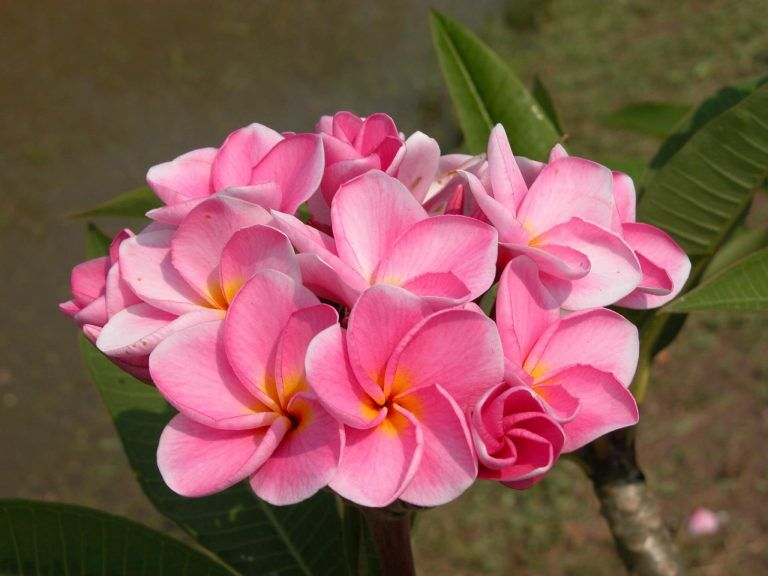Belle Vista มีชื่อไทยว่า สุปราณี พิงค์ เป็นพันธุ์ที่ออกดอกง่าย ดอกมีสีชมพูหวาน ขนาดดอกกลาง ๆ ไม่ใหญ่มาก ลักษณะกลีบดอกหน้านอกเป็นสีชมพูเข้มไล่อ่อน กลีบดอกด้านในเป็นสีเหลือง ส่วนลำต้นจะไม่ใหญ่มาก ความสูงไม่เกิน 1-2 เมตร
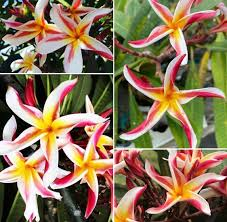Madam Poni เป็นลีลาวดีลูกผสมที่ลักษณะดอกแปลกกว่าทั่วไป ดอกต้นเดียวกันบานพร้อมกันก็ยังไม่ค่อยเหมือนกัน บางทีเรียกกันว่าค็อกสกรู (Cockscrew) หรือสตาร์ (Star) ตามลักษณะกลีบดอกที่บิดและเป็นแฉกปลายแหลม 5 แฉกคล้ายดาว ดอกมีกลิ่นหอมมาก
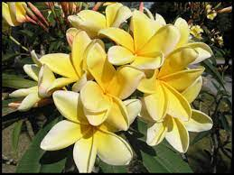Aztec Gold เป็นลีลาวดีที่ดอกมีกลิ่นหอมเฉพาะคล้ายกลิ่นลูกท้อสุก ใบมีลักษณะรูปหอก ปลายแหลมสีเขียวมะกอด ก้านใบสีเขียวเหลือบแดง เมื่อตอนบานใหม่ ๆ จะเป็นสีทองเข้ม มีแถมชมพูแซมจากด้านหลัง แต่พอนานไป ขอบกลีบจะค่อย ๆ เปลี่ยนสีเป็นสีขาว
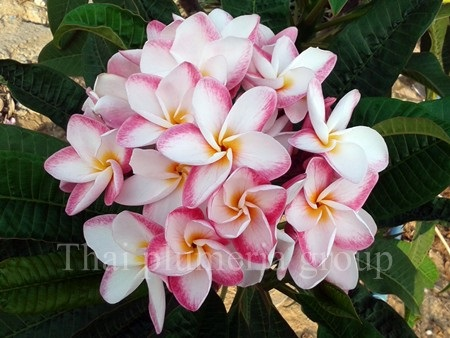Pink Pansy เป็นลีลาวดีไม้นอกพันธุ์แท้ สีขาว-ชมพู ดอกขนาดกลาง-ใหญ่ ดอกกลม ทรงดอกเป็นรูปถ้วย ออกดอกดกตลอดทั้งปี ช่อใหญ่ มีกลิ่นหอมมาก ๆ หอมโชยแบบหอมหวาน ขนาดต้นสูงพอประมาณ ขนาด 1.5 เมตร
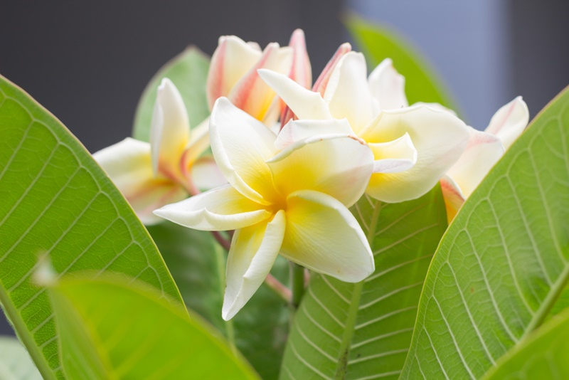Moonlight เป็นลีลาวดีสีเหลืองอ่อน ออกดอกเป็นช่อใหญ่ ก้านดอกมีความแข็งแรง ทรงต้นไม่ใหญ่มาก สามารถปลูกในพื้นที่ไม่มากได้ จัดเป็นลีลาวดีที่ได้รับความนิยม
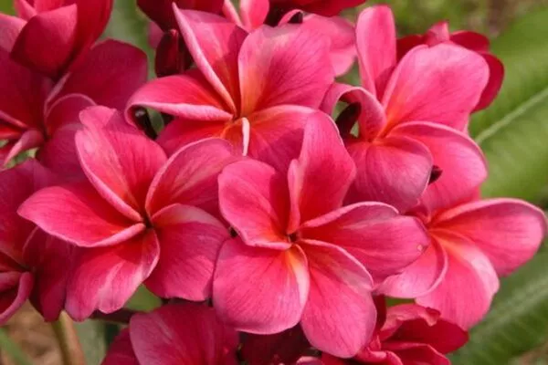India เป็นพันธุ์ลีลาวดีแดง (Plumeria ruba) เป็นลูกผสมที่สวยทั้งดอกและใบ ดอกใหญ่สีเหลืองอมส้ม กลิ่นหอมเหมือนผลไม้ ใบมันเงาเล็กน้อย แตกกิ่งในแนวตั้ง ช่วงกิ่งยาว
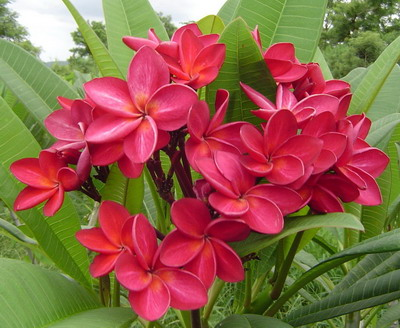Puu Kahea มีชื่ออื่นอีก คือ O Sullivan และ Fiesta เกิดจากการผสมเกสรโดยธรรมชาติของลีลาวดีแดง 2 สายพันธุ์ คือ Plumeris robra forma acuminata กับ Plumeria rubra เป็นไม้ยืนต้นผลัดใบ ทรงพุ่มแน่น ใบรูปหอกกลับปลายเรียวแหลม แผ่นใบแข็งสีเขียวขอบแดง ก้านใบสีเขียวเหลือบแดง ดอกใหญ่กลิ่นหอมอ่อน ๆ ไม่แรงมาก [ads]
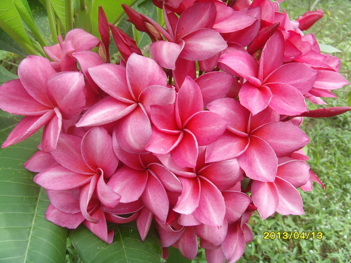Kimi Moragne ในประเทศไทยเรียกว่า เกรนนี่โรรอง เป็นลีลาวดีสีชมพูอมสีม่วง มีกลิ่นหอมและช่อดอกขนาดใหญ่ ประมาณ 4 นิ้ว เป็นลูกผสมระหว่าง เกสรตัวผู้ Scott Pratt กับเกสรตัวเมีย Daisy Willcox เป็นลีลาวดีที่ได้รับความนิยมไปทั่วโลก มีกลิ่นหอม และมีดอกติดต้นประมาณ 8 เดือนในหนึ่งปี
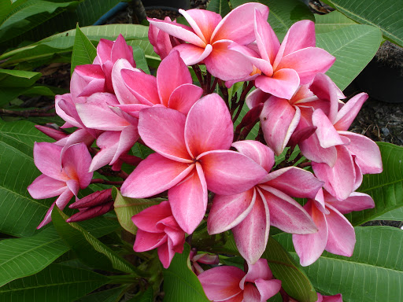My Valentine เป็นลีลาวดีที่มีกลีบดอกโต กลีบดอกมีขาว-ชมพู กลิ่นหอมหวานคล้ายดอกกุหลาบ
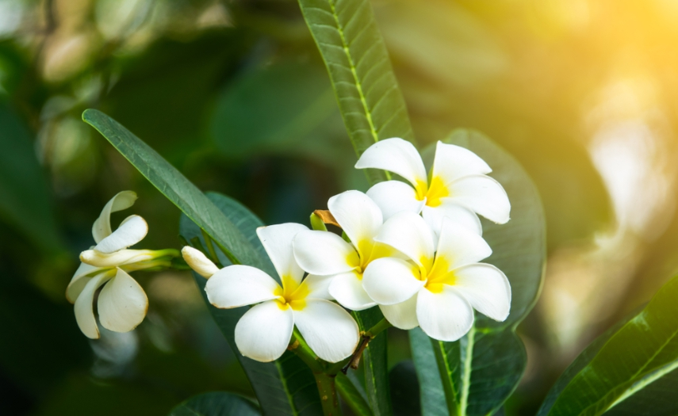ขาวพวงแคระ เป็นไม้พุ่มเตี้ย ต้นสูงไม่เกิน 1.5- 2 เมตร กลีบดอกเป็นรูปรีสีขาวสะอาด ตรงกลางมีสีเหลืองสดอย่างเห็นได้ชัด ขนาดดอก 3 นิ้ว ออกเป็นช่อตามซอกใบใกล้ ปลายยอด แต่ละช่อประกอบด้วยดอกย่อยไม่น้อยกว่า 40-50 ดอก ช่อดอกตั้งขึ้นปลายแยกเป็นกลีบดอก 5 กลีบ ซ้อนเหลื่อมกันเล็กน้อย
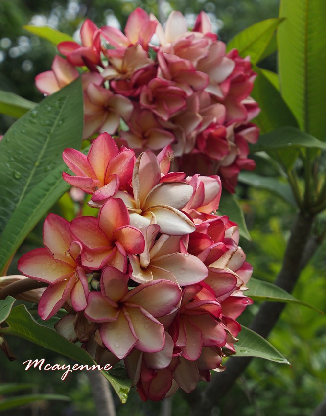พวงหยก เป็นลีลาวดีสีเหลืองอมส้มอ่อน กลีบดอกกลมใหญ่ ขอบกลีบสีแดงเข้ม หลังดอกมีสีแดง กลิ่นหอมอ่อน บานเป็นช่อ
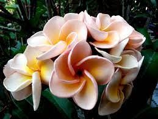เพชรพัชราภรณ์ เป็นลีลาวดีที่มีไม้สีเนื้อ หรือสีน้ำตาล มีช่อดอกแน่นเป็นกระจุก ทรงต้นคอมแพ็ค เหมาะสำหรับคนพื้นที่ไม่มากด้วย พอออกดอกแรก ๆ จะสีมีน้ำตาลอ่อน ๆ แล้วค่อยจางเป็นสีเนื้อ มีกลิ่นหอม ส่วนใบจะสีเส้นสีแดงพาดอยู่
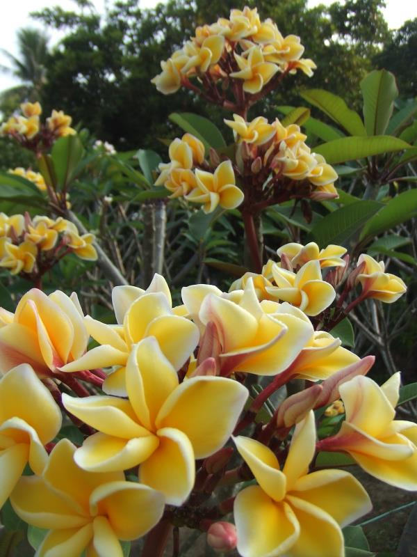เหลืองศิริมงคล เป็นลีลาวดีที่พบในประเทศไทยที่มีชื่อเสียงมากที่สุดสายพันธุ์หนึ่ง มีสีเหลืองสด กลิ่นหอมจาง ๆ ลักษณะกลีบดอกจะเล็ก ๆ เมื่อบานแล้วมองดูคล้ายรูปดาว
สังวาลย์ทับทิม เป็นลีลาวดีที่เป็นลูกไม้ใหม่มาแรง กลีบดอกเป็นสีชมพูออกเป็นบานเย็น ฟอร์มดอกกลมมีขนาดดอกใหญ่ ช่อดอกดกพอสมควร
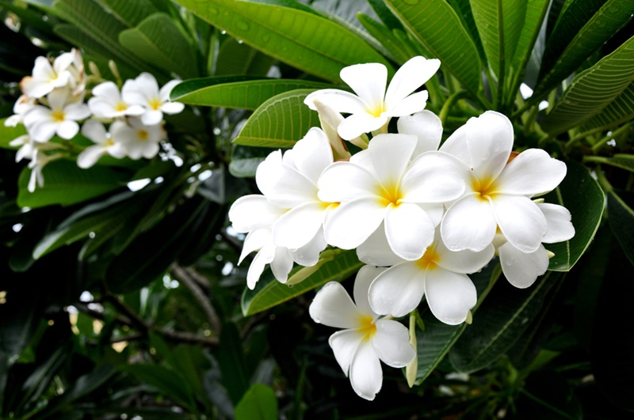พันธุ์ขาวพวง เป็นพันธุ์ลีลาวดีโบราณดั้งเดิมที่มีในประเทศไทยแรก ๆ จะเห็นตามวังเก่า ๆ หรือวัดทั่ว ๆ ไป ออกดอกดกมาก ช่อดอกใหญ่มี 10-15 ดอก มีกลิ่นหอมเย็น ๆ
ต้นลีลาวดี นอกจากจะให้ร่มเงา ให้ดอกสวยงาม และมีกลิ่นหอมแล้ว ยังมีหลากหลายสายพันธุ์มากๆ ใครที่ชอบสายพันธุ์ไหน ก็ลองหามาปลูกประดับตกแแต่งบ้านได้นะคะ